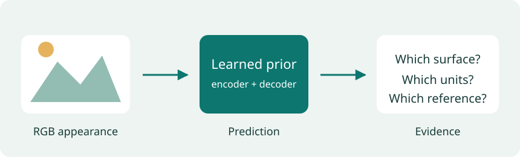

Lesson 1 of 7 · 2 min
Monocular depth estimation
Learning to read depth from a single photograph
Page narration: listen, read, or record
Page audio is pending.
Start with the car mirror. Two models reverse an annotated near and far pair, while a third gets it right. The maps look plausible, so checking the points reveals something we might otherwise miss. For this project, I compared V2 Small, AC Small, and DA3 Small on fifteen photographs, including dimmed and blurred versions. I also checked six indoor scenes against sensor depth. The tutorial explains what their values mean, how recent models learn depth, and how I scored the results. Then you can inspect the predictions yourself. The website displays saved runs. The Python walkthrough lets you run a new photograph.
Download scriptRecord your own narration
Use the script above as a guide. Press Record to enable the microphone. Audio stays on your device.
Press Record when ready.
Download before leaving this page. Add the clip to the narration folder to publish it. Recording guide
A car mirror gives three depth models the same problem. Two place an annotated pair of points in the wrong near/far order. The third gets it right.
The full maps look plausible. The mistake becomes clear only when we check the marked points. That gap between a convincing picture and a correct prediction is the starting point for this tutorial.

Monocular depth estimation predicts depth from one RGB photograph. Perspective, overlapping objects, and familiar sizes provide clues, but mirrors, glass, thin edges, and poor lighting can make those clues misleading.
I compared Depth Anything V2 Small, DepthAnything-AC Small, and Depth Anything 3 Small on the same 15 photographs, then repeated the test with dimming and blur. Six indoor RGB-and-depth examples provide a second check against sensor measurements.
From the photograph to the prediction
We begin with camera geometry and the difference between relative depth and meters. The model section follows the path from pretrained image features to a depth map, including how researchers adapt foundation models. The evaluation section explains the scores before you inspect the results yourself.
- GeometryWhy near and far are easier than meters
- ModelsImage features, decoders, and adaptation
- EvaluationPoint-pair ordering and sensor-reference errors
- ExperimentsInspect a reflection, a thin edge, or a dimmed scene
- ConclusionsFindings, applications, and the next experiments
- ReferencesSources and research notes
Allow about 20–27 minutes, including 5–8 minutes in the explorer. The expanded method notes, paper links, and Python walkthrough are optional and take longer. Basic familiarity with images and neural networks will help; you can follow the tutorial without running code.
Start with the mirror
Open Experiments, keep the original car-mirror image, and choose pair 2. Switch models and compare their answers with the annotation. Then look at the surrounding reflection: what surface would you expect the model to estimate?
The explorer uses predictions saved from local Python runs. For a new photograph, follow the inference walkthrough.